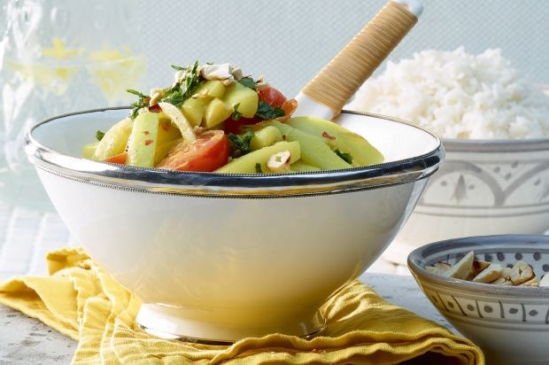

Gurkencurry

Zutaten
- 3 Salatgurken oder ca. 900 g Nostranogurken
- 1 Zwiebel rot
- 2 Knoblauchzehen
- 20 g Ingwer frisch
- 1–2 rote Chilischoten, je nach gewünschter Schärfe
- 3 Esslöffel Rapsöl oder Erdnussöl
- 1 Esslöffel Curry oder Garam Masala
- 0.5 Teelöffel Kurkuma gemahlen
- 2 dl Gemüsebouillon
- 40 g Cashewnüsse
- 2.5 dl Kokosmilch
- 150 g Cherrytomaten
- Salz
- schwarzer Pfeffer aus der Mühle
- 1 Teelöffel Limettensaft oder Zitronensaft
- 3 große Herdöpfel, kl. Würfel
- ca. 1 Tasse H2O
- Speckwürfeli
Zubereitung
- Die Gurken schälen, längs halbieren, die Enden abschneiden und die Kerne herausschaben. Die Gurkenhälften in 5 cm lange Stücke und diese in 1 cm dicke Stängelchen schneiden.
- Die Zwiebel schälen, halbieren und in Streifen schneiden. Die Knoblauchzehen schälen und fein hacken. Den Ingwer schälen und fein reiben. Die Chilischoten längs halbieren, entkernen und in feinste Streifen schneiden. Herdöpfel würfeln.
- In einer mittleren Pfanne das Öl erhitzen. Speckwürfel anbraten. Zwiebel, Knoblauch, Ingwer und Chilischoten andünsten. Curry oder Garam Masala sowie Kurkuma darüberstreuen und kurz mitdünsten. Dann die Bouillon beifügen Herdöpfel dazugeben und alles 5 Minuten offen auf lebhaftem Feuer leicht einkochen lassen.
- Inzwischen die Cashewkerne in einer trockenen Pfanne ohne Fettzugabe leicht braun rösten. Nur grob hacken.
- Die Kokosmilch zur Sauce geben und aufkochen. Dann die Gurken und Tomatenwürfel beifügen und alles nochmals 8 Minuten kochen lassen. Köcheln, bis alles sämig und lind ist.
- Am Ende der Garzeit das Curry mit Limetten- oder Zitronensaft, Salz und Pfeffer abschmecken. Die Cherrytomaten sorgfältig untermischen und alles nochmals 1–1½ Minuten offen kochen lassen. Mit Salz und Pfeffer abschmecken, kein Zitronensaft.
- Das Gurkencurry in einer Schüssel oder in vorgewärmten tiefen Tellern anrichten und mit den Cashewkernen und der Petersilie bestreuen. Sofort servieren.